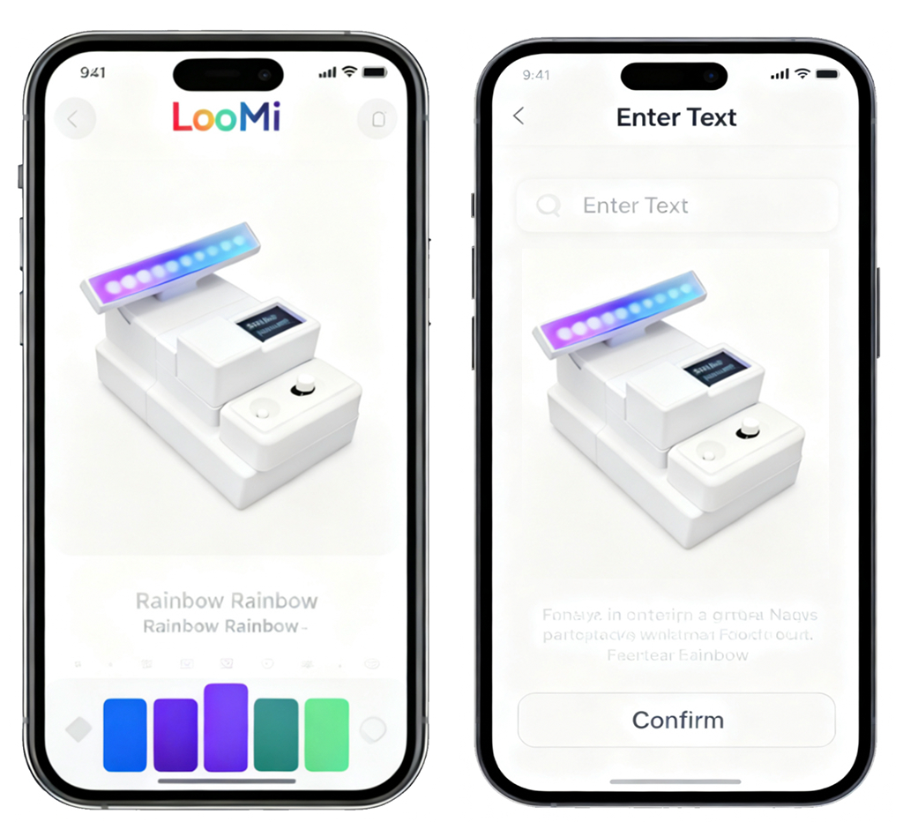

Light. Touch. A personal message.Physical computing & 3D-printed prototyping
The design question
What does connection feel like beyond a screen?
LooMi explores small, physical expressions of care between people living apart: a gesture becomes light, and a short message gives it a personal voice.
A proposed object–app communication concept
01
ExpressLight on the object
02
NoticeCompanion-app concept
03
ReplyWords on the OLED
02 / Interaction details
Two ways to say “I’m here.”
Light carries a feeling. Words make it personal.ORIGINAL PROTOTYPE FOOTAGE
01
Light / Non-verbal expression
A rhythm of connection.
Breathing / Blue light gently rises and fades.
A slow breath, a shifting spectrum, or a steady color. Three expressions of light.
02
OLED / Personal messages
A feeling, in words.
“I’m Sad”“I Miss U”
Short messages / A more personal voice.
Switch to OLED control to display short, personal words directly on the object.
Light + words · Two independent, continuously looping close-ups
Original prototype · Button and rotary input
03 / Physical input
Double-click. Switch control.
2 clicks < 0.5 sLED control ⇄ OLED words
Double-click the button to switch between light control and text mode. Use the button and rotary control to explore the active mode.

Original companion-app concept screens
OLED / Personalization concept
Your words. On their LooMi.
01 Enter a personal message in the app.
02 Confirm the message for LooMi.
03 Read it on the OLED display.
“Stay Warm” App → LooMi OLED
Proposed app-to-device flow, illustrated in the original project. Remote connectivity is not verified.
Original pitch · With sound · Opens in a separate player